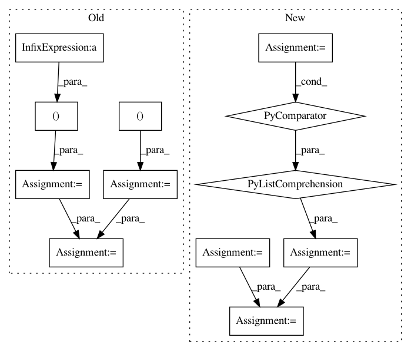

3dba9054b3c7bf4b9edabb430eb457a07e05b6ca,tensorly/mps_tensor.py,,mps_to_tensor,#Any#,8
Before Change
(r0, n1, r1) = factors[0].shape
output_tensor = factors[0]
output_tensor = tl.reshape(output_tensor, (n1, r1))
for k in range(1, D):
(r_prev, n_k, r_k) = factors[k].shape
G_k = tl.reshape(factors[k], (r_prev, n_k * r_k))
output_tensor = tl.dot(output_tensor, G_k)
output_tensor = tl.reshape(output_tensor, (-1, r_k))
output_tensor = tl.reshape(output_tensor, n_mode_dimensions)
return output_tensor
After Change
output_tensor: ndarray
tensor whose MPS/TT decomposition was given by "factors"
full_shape = [f.shape[1] for f in factors]
full_tensor = tl.reshape(factors[0], (full_shape[0], -1))
for factor in factors[1:]:
rank_prev, _, rank_next = factor.shape
factor = tl.reshape(factor, (rank_prev, -1))
full_tensor = tl.dot(full_tensor, factor)
full_tensor = tl.reshape(full_tensor, (-1, rank_next))
return tl.reshape(full_tensor, full_shape)
In pattern: SUPERPATTERN
Frequency: 3
Non-data size: 12
Instances
Project Name: tensorly/tensorly
Commit Name: 3dba9054b3c7bf4b9edabb430eb457a07e05b6ca
Time: 2018-07-05
Author: jean.kossaifi@gmail.com
File Name: tensorly/mps_tensor.py
Class Name:
Method Name: mps_to_tensor
Project Name: biolab/orange3
Commit Name: c79669f77f9564fd035e7926b4423342db37b2c9
Time: 2017-05-26
Author: jerneju@gmail.com
File Name: Orange/widgets/data/owmergedata.py
Class Name: OWMergeData
Method Name: _join_array_by_indices
Project Name: lingpy/lingpy
Commit Name: 74e8e5cc46d71d4b5b3e1112d5c7998056addc97
Time: 2013-03-13
Author: mattis.list@posteo.de
File Name: lingpy/compare/lexstat.py
Class Name: LexStat
Method Name: _align_pairs